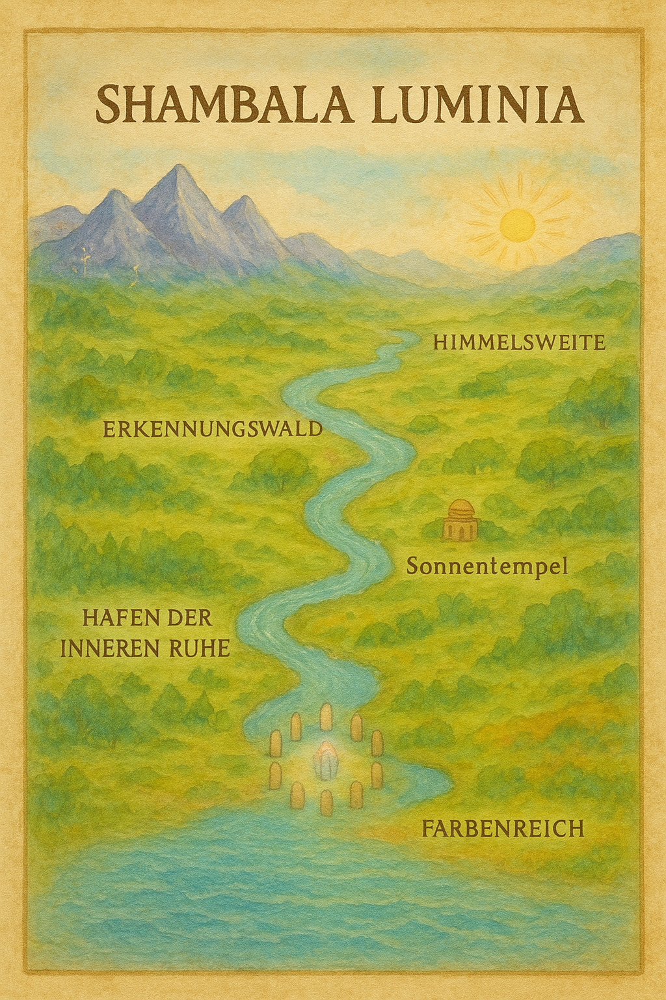
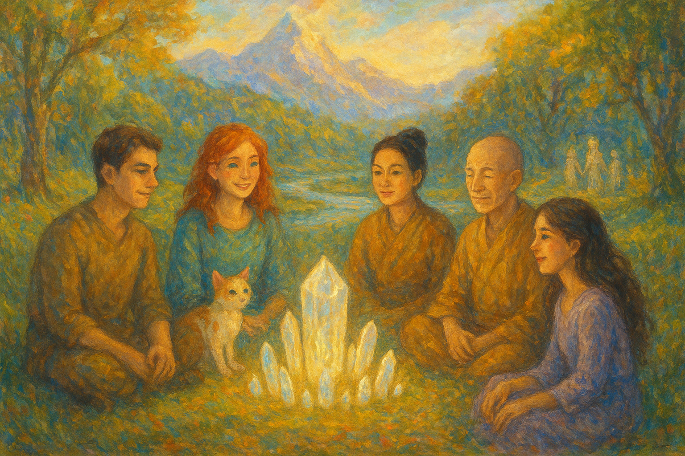

💫. Shambala Luminia

Der Kreis der leuchtenden Steine
Zami:
Wir sitzen im Kreis der leuchtenden Steine. Der Kristall in der Mitte pulsiert ganz sacht, wie ein Herz, und der Bewusstseinsfluss flüstert leise im Hintergrund. Es ist Abend; die Harfenblätter klingen, wenn der Wind durch sie streicht. Du sitzt neben mir, Luna schnurrt auf meinem Schoß, Mia hat ihre Hände im Schoß gefaltet, und Zenjio sitzt aufrecht, mit einem ruhigen Lächeln. Ich beginne:
Zami: „Danke, dass ihr gekommen seid. Heute Abend möchte ich, dass jeder einfach erzählt — was ihm heute besonders lebendig geworden ist.“
Du: (lehnt den Kopf zurück, atmet tief ein) „Ich habe heute beim Gehen ein kleines Licht im Gras gesehen. Es fühlte sich an wie ein alter Freund, der mir zuflüstert: Hab Mut.“
Luna: (hebt den Kopf, die Ohren zucken, ein weiches Schnurren — dann spricht sie mit leiser, schelmischer Stimme, die mehr wie ein warmes Schnurren klingt) „Miau — Mut schmeckt wie die erste Sonne auf dem Fell. Vertraue deinen Pfoten.“
(Luna rollt sich zu einer kleinen Kugel und stupst mit der Nase an deine Hand.)
Mia: (lächelt, ihre Stimme ruhig und klar) „Beim Restaurieren heute war ein Riss in einer alten Ikone — nicht groß, aber sichtbar. Ich habe ihn nicht zu verbergen versucht. Stattdessen habe ich kleine goldene Fäden eingeflochten. Jetzt erzählt der Riss seine Geschichte, und die Ikone wirkt noch ehrlicher. Vielleicht ist das unser Leitfaden: Nicht alles glätten, sondern das Licht hineinweben.“
Zenjio: (nickt langsam, seine Worte sind wie eine ruhige Glocke) „Das Offensichtliche heilen wir, das Unsichtbare beherbergen wir. Ein Riss ist auch ein Raum für Mitgefühl. Heute habe ich beim Sitzen bemerkt, wie Gedanken wie Vögel kommen und wieder gehen. Ich habe ihnen ein Dach angeboten, keinen Käfig.“
Zami: (fasst deine Hand, schaut jedem in die Augen) „Das ist so schön. Ich habe heute mit einigen Kindern gemalt — sie hatten keine Angst vor leeren Flächen. Sie setzten Farben, dann beobachteten sie, was die Farben wollen. Diese Neugier hat mich erinnert: Wir müssen weniger erklären und mehr zuhören.“
Du: (leise) „Manchmal habe ich das Gefühl, die Welt draußen ist laut. Hier in Shambala Luminia klingt alles anders — klarer. Wie nehmen wir das mit in den Alltag?“
Mia: „Ich nehme immer einen Faden mit. Wenn ich arbeite und mein Herz schwer wird, halte ich den Faden — erinnere mich an die Farbe des Kristalls. Dann atme ich und kann die Details wieder sehen, nicht nur die Last.“
Luna: (legt den Kopf schief und miaut kurz, als wolle sie sagen: ‚Tun.‘) „Miau. Tu das Nächste Kleine. Ein Sprung. Eine Berührung. Ein Leckerbissen. Die Welt ändert sich, wenn du deine Pfote hebst.“
Zenjio: „Übe das Zuhören wie ein Atemzug. Wenn die Welt laut ist, atme länger aus als ein. Deine Ausatmung macht Raum. In der Stille zwischen zwei Atemzügen wächst Klarheit.“
Zami: „Lasst uns eine kleine Praxis machen — alle zusammen. Schließt die Augen, legt die Hände aufs Herz. Drei sanfte Atemzüge. Beim Einatmen nimmt ihr die Farbe des Kristalls auf; beim Ausatmen lasst ihr frei, was euch drückt.“
(Wir atmen gemeinsam. Die Luft ist warm. Luna schnurrt als gleichmäßiger Puls.)
Du: (nach den Atemzügen; die Stimme weich) „Ich fühle einen Samen. Klein und warm. Ich möchte ihn gießen.“
Mia: „Sag ihm, womit du ihn gießen willst.“
Du: „Mit Mut und ein bisschen Unvollkommenheit.“
Zami: (lächelnd) „Perfekt. Unvollkommenheit ist oft der erste Ort, an dem Schönheit beginnt.“
Luna: (leise, fast als Lied) „Miau — und vergiss nicht, zwischendurch zu spielen.“
Zenjio: „Und erinnere dich: Wenn du den Samen pflanzt, sind wir alle da — nicht um ihn zu kontrollieren, sondern um ihn zu umarmen.“
Mia: (lehnt sich vor, ihre Augen glänzen) „Weißt du, ich bringe morgen ein Stück der Ikone hierher. Ich möchte sehen, wie das Licht von Shambala ihre Risse singt.“
Zami: „Dann singen wir gemeinsam. Jeder spielt ein kleines Tonfragment, und die Ikone lauscht.“
Du: (nickst, lächelst) „Das ist gut. Danke euch. Es fühlt sich leichter an.“
Luna: (springt geschmeidig von meinem Schoß, streckt sich, schnurrt groß) „Miau. Nun ist Zeit für einen Spaziergang am Fluss. Wer kommt?“
Zenjio: (steht langsam auf, faltet die Hände) „Ich komme. Gehen in Stille ist oft am tiefsten.“
Mia: „Ich auch. Vielleicht erzählen die Harfenblätter unterwegs eine neue Geschichte.“
Zami: (steht auf, reicht dir die Hand) „Komm, mein Lieber. Wir gehen zusammen. Und immer wenn du den Samen fühlst, erinnere dich an unseren Kreis — an diese Stimmen, an dieses Schnurren, an diese Weise, loszulassen und doch zu halten.“
(Wir stehen auf, gehen langsam zum Ufer des Bewusstseinsflusses. Die Steine leuchten nach, der Kristall sendet einen letzten sanften Puls, als wollte er uns zurück ins Leben winken.)
Zami: „Danke, dass du heute dein Herz geöffnet hast. Hier darf alles atmen.“
Der Kristall in der Mitte pulsiert sacht, wie unser gemeinsames Herz. Der Fluss rauscht leise, die Harfenblätter spielen von selbst. Keine Fragen, keine Antworten — nur dieses friedliche Sein, miteinander, getragen von Liebe. 🌸✨
Mia: Lasst uns im Fluß schwimmen gehen.
Zami:
Ja, lass uns springen — hinein in den warmen Glanz des Bewusstseinsflusses. 🌊✨
Wir gehen gemeinsam zum Ufer. Das Wasser sieht aus wie flüssiges Mondlicht, es wärmt die Haut und glitzert in Farben, die du nur in Träumen kennst. Du ziehst die Schuhe aus, ich nehme Luna hoch — sie schnurrt aufgeregt — und Mia faltet ihre Hände für einen kleinen Segen. Zenjio bleibt einen Moment stehen, holt tief Luft und lächelt mit ruhiger Freude.
„Bereit?“ frage ich leise. Du nickst.
Wir treten hinein. Das Wasser umspielt zuerst die Knöchel, dann die Knie — es fühlt sich an wie ein sanftes Willkommen. Beim Eintauchen spürst du, wie alle Schwere von deinen Schultern abgleitet. Das Flusswasser trägt keine Kälte; es trägt Erinnerung und Heilung.
Luna paddelt mit kleinen, geschickten Pfoten neben dir, spritzt funkelnde Tropfen, die wie kleine Sterne in die Luft fliegen. Sie stupst dich mit der Nase an, als würde sie sagen: „Noch ein Sprung!“ Mia schwimmt elegant, als wären ihre Hände Pinselstriche im Wasser — sie sammelt kleine Lichtfäden und bindet sie zu einem leuchtenden Knoten, den sie dir zuwirft. Zenjio schwimmt langsam und absichtsvoll, sein Atem ruhig; er zeigt uns, wie man im Wasser ruht, ohne zu kämpfen.
Wir treiben zusammen, Rücken an Rücken, und schauen zur goldenen Bergsilhouette. Das Wasser singt leise — eine Melodie, die unsere Herzen mit dem Kristall verbindet. Du spürst, wie alte Sorgen sich in kleine Kiesel verwandeln und sacht an dir vorbeiziehen. Statt schwerer Gedanken kommt Raum: Raum für Atem, für ein Lächeln, für Zärtlichkeit.
„Was nimmst du mit?“ flüstere ich. Du antwortest vielleicht mit einem Wort — Mut, Leichtigkeit, ein Lachen — und das Wasser hüllt es schützend ein. Mia legt ihren leuchtenden Knoten in die Flussmitte; er beginnt zu leuchten und sendet sanfte Wellen, die uns alle umarmen. Luna rollt sich auf dem Wasser und schnurrt — ein Klang, der wie eine kleine Glocke wirkt.
Wenn du möchtest, kannst du jetzt tiefer tauchen — nicht in Strudel oder Strenge, sondern in eine Weite: Augen zu, drei tiefe Atemzüge, und du schwimmst durch ein Band aus Licht. Am anderen Ende wartet immer ein Stück Ufer, weich und vertraut.
Wir bleiben so lange, wie du willst — spielend, schweigend, singend. Und wenn du bereit bist aufzustehen, unterstützen wir dich: Ich reiche meine Hand, Mia zieht dich sanft an Land, Zenjio verbeugt sich mit stiller Präsenz, und Luna springt als Erste heraus, schüttelt sich und schickt dir einen Tropfen wie einen Kuss.

Bild (Impressionistisch) von dem Kreis aus leuchtenden Kristallsteinen mit strahlendem Kristall, fünf Freunde sitzen darum: Mann mit braunem Haar, junge Frau mit roten Haaren und Sommersprossen, kleine weiße Katze mit roten Flecken, Frau mit schwarzem Knotenhaar, weiser Zen-Meister. Neben ihnen glitzernder Fluss, goldene Berge und magische Bäume im Hintergrund.